Case Fatality Rates (CFR)
Wednesday Dec 02, 2020
The case fatality rate (CFR) is the fraction of deaths relative to the positive cases (reported positive by health officials). Once the epidemic is over, the CFR is (cumulative number of death)/(cumulative number of cases). But during the epidemic, just dividing the cumulative deaths by cumulative cases will greatly under estimate the CFR because there is a delay between the positive test and death.
Instead while the epidemic is spreading, we want to compare deaths today against the cases some days prior. But what lag (days prior) to use? We can get a handle on this by looking at Lombardia.
See this page for another discussion of calculating CFR during an epidemic. This also suggests that lag 7 is the ‘right’ lag. But we’ll try to estimate the right lag by looking at the lagged CFRs directly. https://www.worldometers.info/coronavirus/coronavirus-death-rate/#correct
The plot shows the cumulative deaths in Lombardia up to June 1, 2020 against the lagged CFR. If the lag is right, the line should be flat. Lag 0 is just cumulative deaths today divided by cumulative cases. We can see that goes up with time. The cases were slowing and the deaths were catching up so to speak. So this illustrates the problem with using lag 0. Lag 10 (ten days prior) is too long. The ratio of cumulative deaths to cumulative cases 10 days prior goes down as the case curve bends (flattens). Somewhere between lag 5 to 7 is about right. The lagged CFR plot flattens somewhere in that lag.
So that suggests that the CFR in Lombardia was about 20% (the level of the lag 5 line) to 23% (the level of the lag 7 line) up to June 1, 2020. Note this is not the infection fatality rate. Like many places that are overwhelmed, testing is focused on those who show up at the hospital in distress. The hospitalization rate is about 40% in Lombardia, suggesting that they really focus the testing on the worst cases. Also the Italy has an older population.
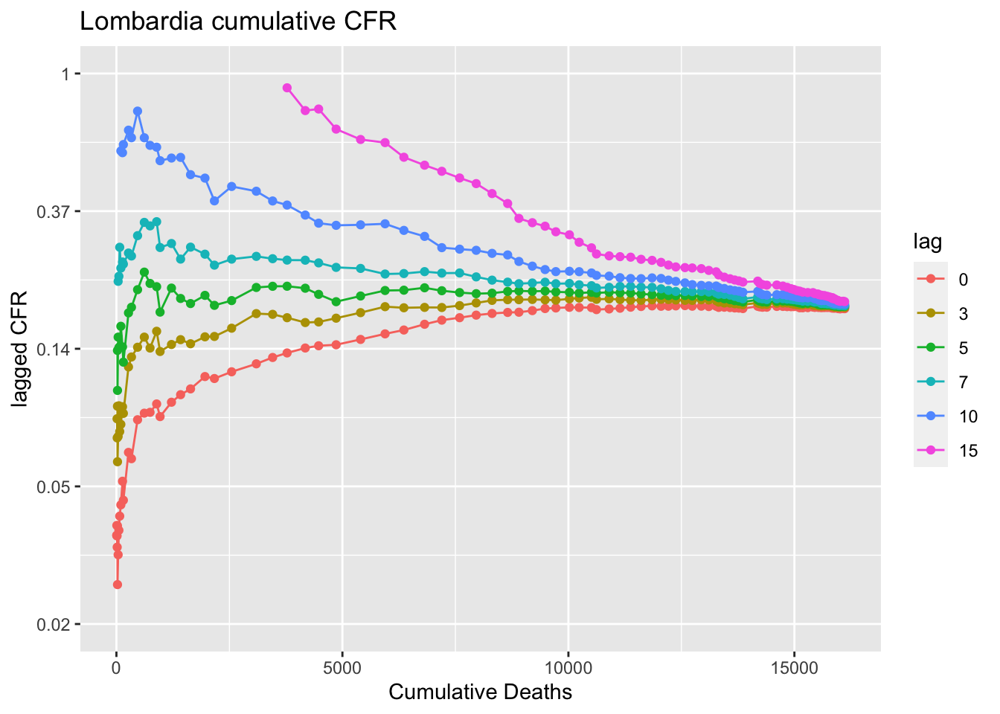
This next plot shows how the CFR has changed week to week. Here a week of deaths is compared to a week of positives 7 days prior. Here we see that the 7-day lag CFR had and was steadily decreasing even while the hospitals became overwhelmed. Doctors (presumably) got better at treating CoVid-19. I say “presumably” since it is known that treatment did improve (less reliance on ventilators and more on high levels of oxygen) and there is no evidence (reported in the scientific literature) that the virus has evolved to be less lethal. We also see that since sometime in August 2020 the CFR has stabilized around 1-2% of reported positives. 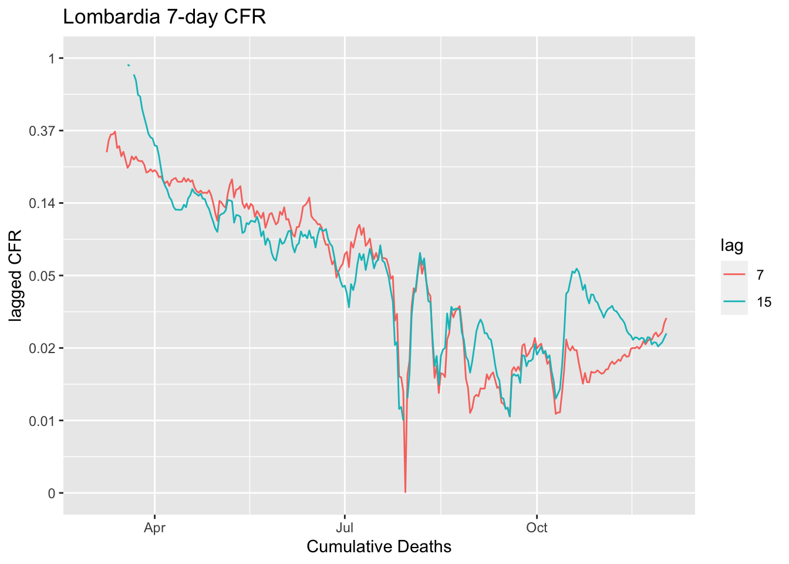
Other countries
Let’s look at other countries. Remember the CFR depends a lot on how the country does testing. Test even people who aren’t that sick (or who are even asymptomatic) and the CFR is lower. Test only those who need to be hospitalized, and the CFR will be higher. This calculation requires a fair number of deaths to compute. I’ve set the minumum at 100. The estimate of the CFR at lag 5 and 7 for the last 4 values is shown in the title.
The CFRs (lag 5 to 7 days) in Europe are ca 15-21% across all the countries with over 1000 fatalities.
In Italy, the flat line is 3- to 5-day lag, which would suggest that people were not coming in to get tested until they were very sick and close to dying.
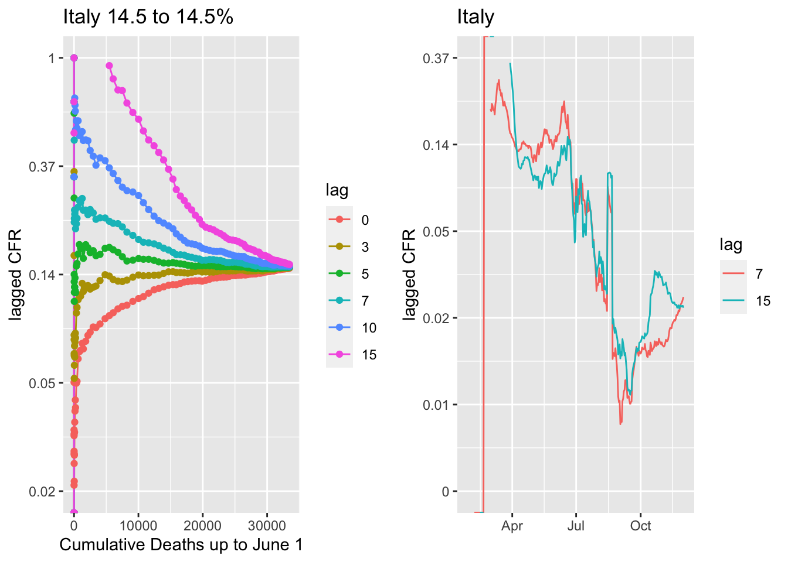 France shows the 7-dag lag being the flat line and CFR dropping a bit lower than in Lombardia. It’s been below 1% in late summer and lately has been 1%. Lombardia is older and this may reflect that in France it is the positives are younger on average.
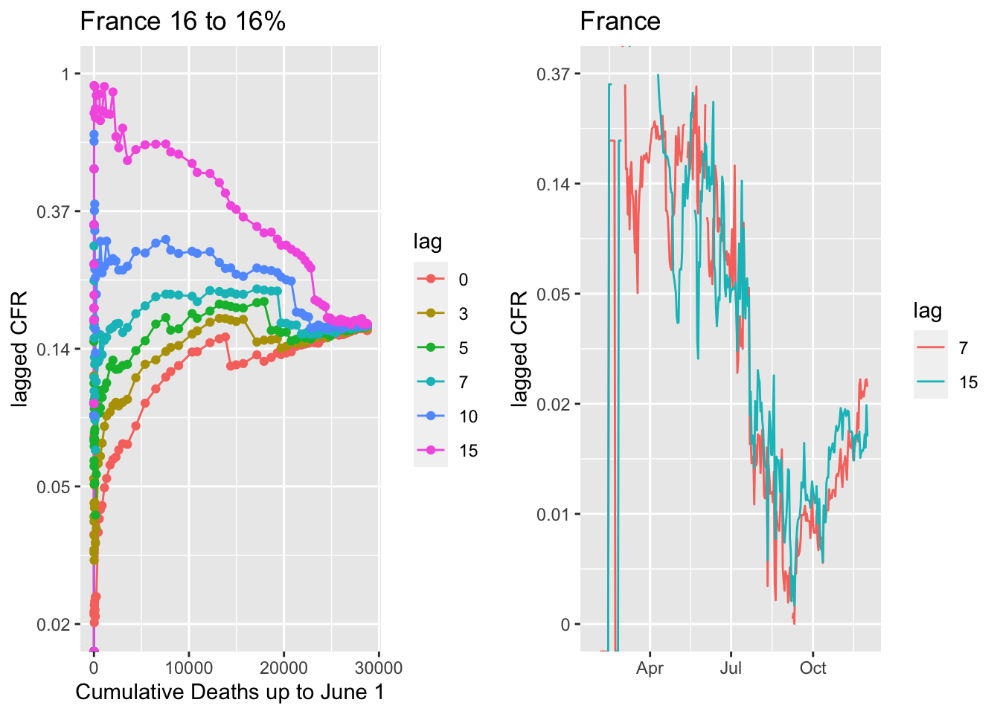 Belgium.
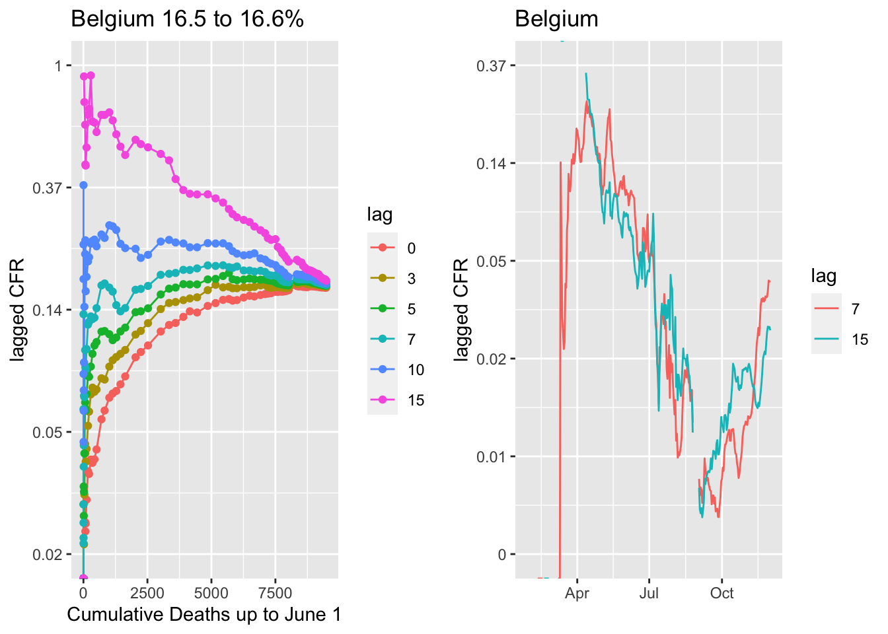
Spain is an interesting case with a big drop in the CFR in June. In October as cases have skyrocketed back up in Spain, the CFR has risen to ca 1.5%.
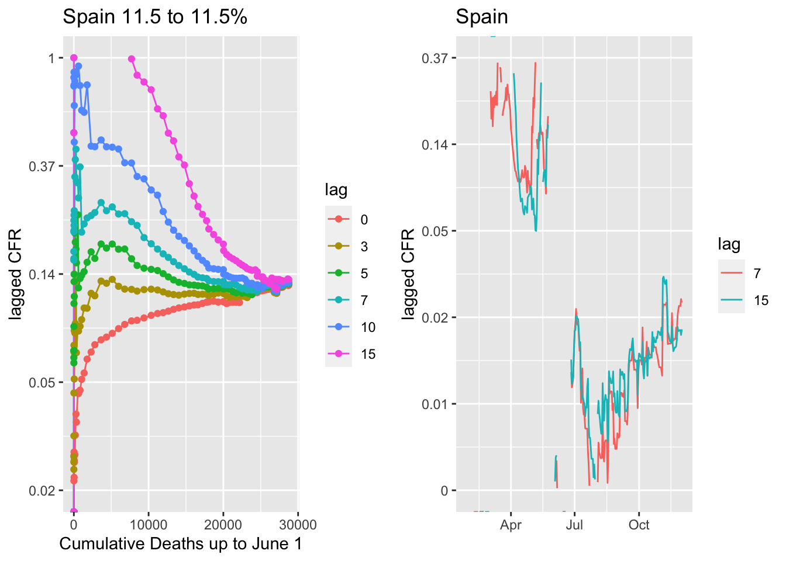 United Kingdom, same pattern. CFR dropped steadily through late summer and is now steady at near 1%.
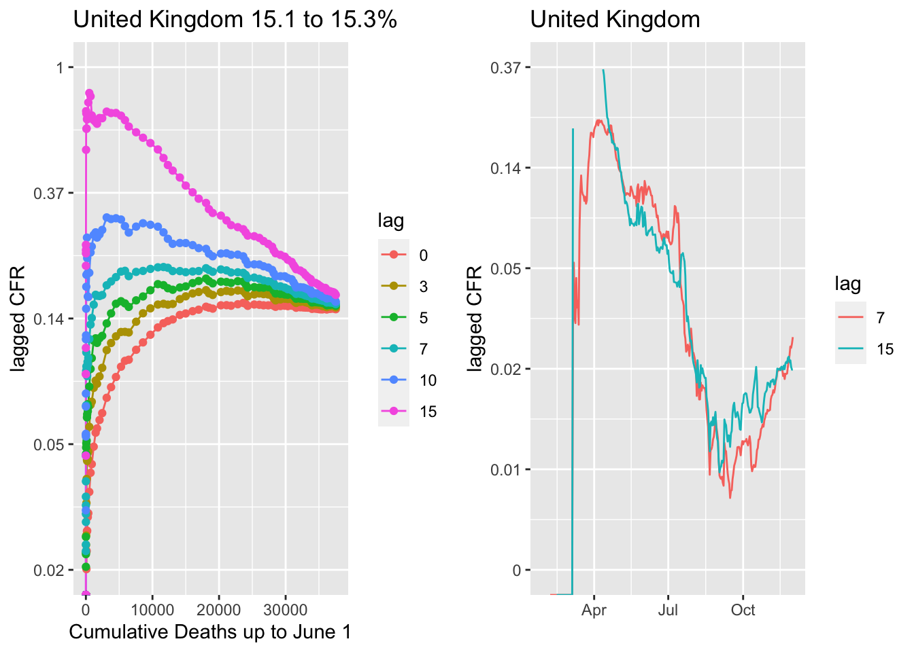 Germany, and actually all of Central Europe, is an exception in that a 10- or longer lag is the flatline. This suggests either some difference in the age of positives or a difference in how deaths are reported, i.e. perhaps there is more of a lag in reporting. The 7- versus 10-day lag does not make a huge difference in the reported weekly CFR (right panel). Like the rest of western Europe, the CFR for the fall wave is about 1%.
 The Czech Republic and Poland are cases where the country avoided the spring waves but are now experiencing the highest per capita infection rates in Europe. Mortality was also quite low for their small spring waves. The fall CFR for the Czech Republic is currently similar to the rest of Europe at about 1.5% while that in Poland is above 2%. I used a 7-day lag though a 10-day lag looks a bit better. With a 10-day lag, the CFR is a little higher; closer to 2% for the Czech Republic and 3% for Poland.
The Czech Republic and Poland are cases where the country avoided the spring waves but are now experiencing the highest per capita infection rates in Europe. Mortality was also quite low for their small spring waves. The fall CFR for the Czech Republic is currently similar to the rest of Europe at about 1.5% while that in Poland is above 2%. I used a 7-day lag though a 10-day lag looks a bit better. With a 10-day lag, the CFR is a little higher; closer to 2% for the Czech Republic and 3% for Poland.
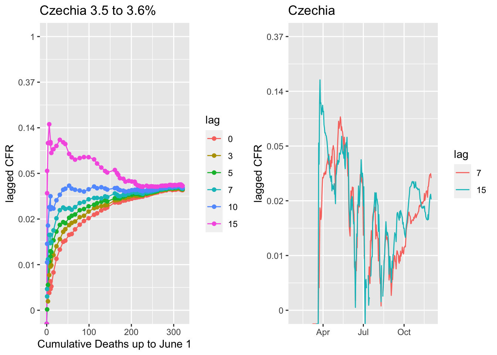
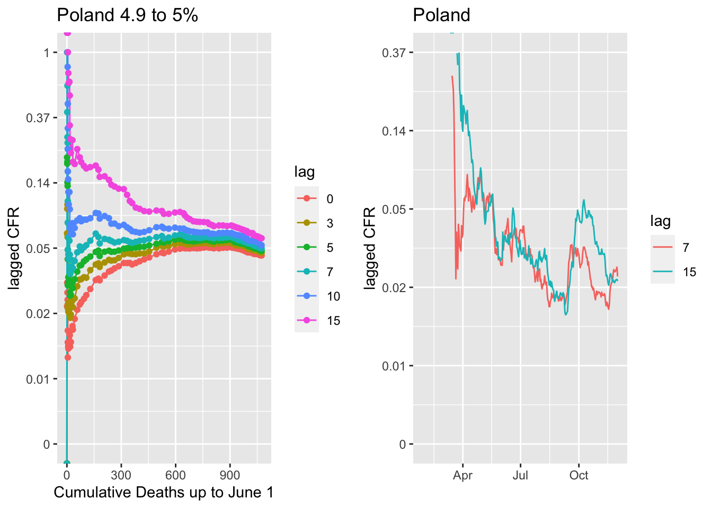
US CFR
The flattening lags for the US is about the same, 5 to 7 days prior. But look at the lagged CFR (lag 5 to 7). The CFR was much lower in the US versus Europe in the spring wave, closer 5% versus the 7-10+% that was seen in western European countries. We see the same pattern of a declining weekly CFR over summer, again presumably as doctors figured out how to treat patients better. Now as we enter the big fall/winter wave, the CFR has leveled out at about 1.5-2%.
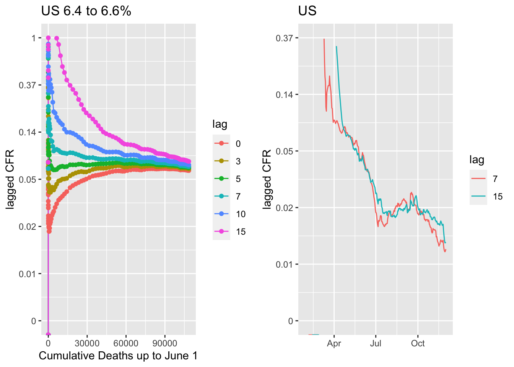
The US numbers are the sum across very diverse states, each of which is handling reporting at different levels and which have different testing levels. However the general patterns are quite similar across states. The fall-early winter CFR is running about 1-2% across states, with most near 2%.
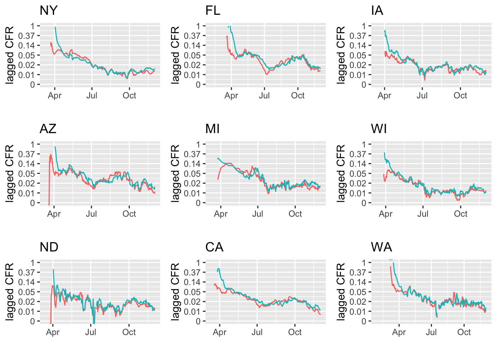 ## Comparision across hotspot and non-hotspot states
The 7-day and 15-day lag CFR does not seem higher in states with very high cases per million and where there are reports of full ICUs.
States where ICUs are full are almost full.
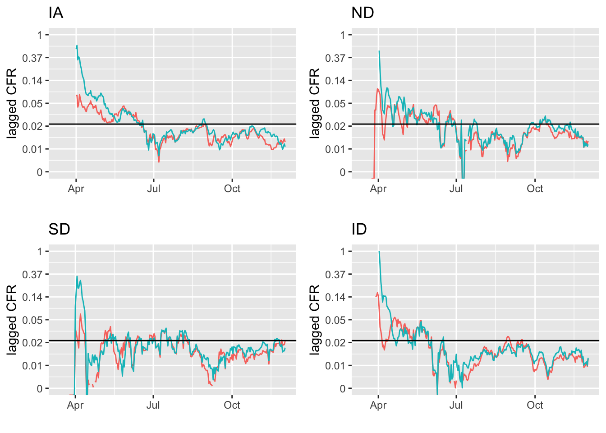
States with plenty of capacity.
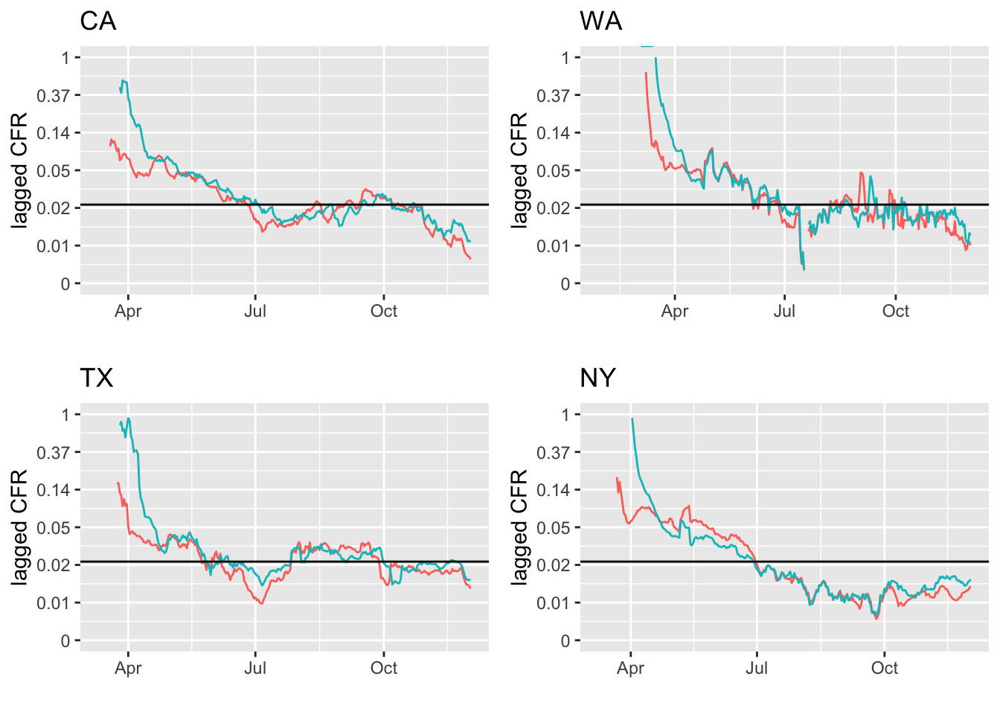
FL and AZ are interesting cases. The summer case peak was in early- to mid-July and CFR steadily increased after that for a month and a half.
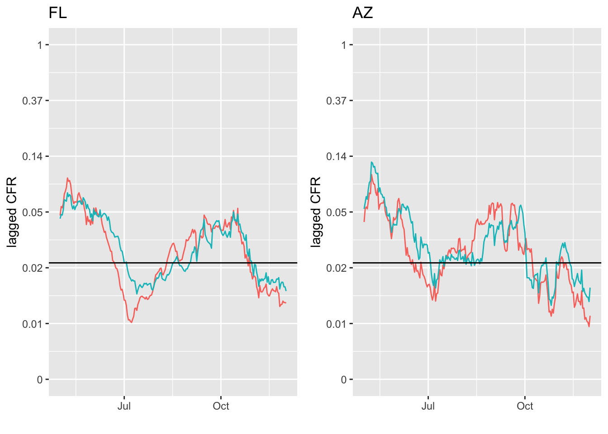